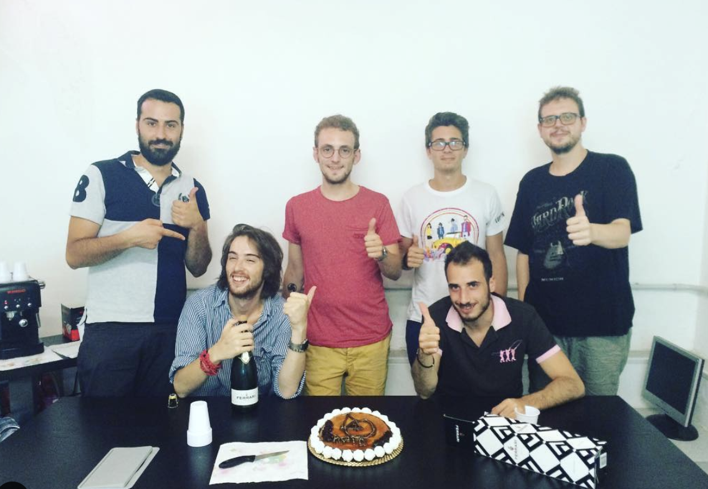

Apio is a fresh, high-tech, innovative start-up, one you would expect to be located in the Silicon Valley. Except, you would be wrong. Based in Spoltore (Pescara), the company was founded by a team of 25 year-olds from Abruzzo in 2014. Apio earned funding from FIRA (Abruzzo regional fund) in 2016, and Var Group SpA – an Italian group which specialises in IT services and solutions – became their partner as early as 2020. We have interviewed Lorenzo Di Berardino and Alessandro Chelli, two of its founders, and current CEOs, to find out more about it!
Guys, what is Apio and how did it start?
Apio is a company born in 2014, whose aim is to develop an ecosystem that can scale up and interoperate within the several fields of application of the Internet of Things and the Blockchain. Apio is Latin for “To establish communication”. It began as the idea of young minds from the Università Politecnica delle Marche. Soon, it evolved into Apio S.r.l., which rose over time as a reliable company in the sectors of innovation technologies and data transmission and analysis. We started out with four people, while our team now counts twelve! Over the years, our ability to combine specific competencies, such as Cloud Computing, Web Development, System Integration, Application, UI/UX, allowed us to cooperate with major national and international enterprises, such as Fater S.p.A, SAMP S.p.A., as well as high-level research centres, like ENEA. Apio is now a Venture Builder. We are not counsellors for our partners, rather a proper Startup Studio that succeeds in creating new business opportunities and spinoffs for large companies thanks to our innovative products and services.
Lorenzo, what opportunities does your sector offer?
Our sector is full of possibilities, and this is why you need to be sort of far-sighted in order to understand which ones are worth exploring better. For example, the latest “product” we have been working on, and which we have launched just recently, is Trusty (https://www.trusty.id/). Trusty is a new communication platform that manufacturers can use so as to build and strengthen their relationship with customers. Trusty employs the blockchain to make the entire supply chain transparent. Well, Trusty involves the food industry, and in this sense our knowledge acquired through Apio gave us the tools to create something which is highly ambitious and we are really proud of.
Alessandro, which progress do you think digitalisation in Abruzzo and Italy has made?
Contrary to popular belief, we are making huge progress! There is special attention towards the Internet of Things, the cloud-based management of processes, and the so-called Industry 4.0. The IoT is becoming a valid resource, though I believe small and medium-sized enterprises are facing the actual challenge. Keeping up with new technologies and competing against big corporations is hard. Investments in digitalisation can definitely help. Is it difficult for a start-up to gain recognition as a company? I do not think so. Open innovation is a hot topic in Italy and that makes it easier for start-ups to get accepted as the main pioneers in innovation. We feel like the introduction of innovative products developed by young minds is a big help.
What does it mean for you to be based in Abruzzo?
To be based in Abruzzo means a lot to us. First, this is the place where many of us come from, which is enough to say we are inextricably linked to this region. Moving from Ancona to Pescara was of huge importance to us. That was when we realised we were on the right track, and that we needed the manifold opportunities offered by Abruzzo in order to keep moving forward. Besides, also thanks to our work with Trusty, we have understood by now that this region gave us so much, both as a company and as individuals. We know for certain it will continue to give our work extra value for a long time.
In which ways do you think expats from Abruzzo can help?
Expats from Abruzzo play a fundamental role. They represent abroad the peculiar ways of thinking and doing of our region. Especially nowadays, we are in need of people who decide to leave the homeland they love in order to promote it in other countries all over the world. Again, as I consider the food industry, I can think of those people who brough our food to America and ended up making it the emblem of a culture American themselves often could feel a part of. The internationalisation of our homeland and mindset enhances both our own regional prestige and that of the world as a global community of people. For this reason, we could definitely use some valuable international contacts in the agri-food sector to promote and give us a feedback on Trusty, our main product.
One last question about Abruzzo... Beach or mountains? What is your favourite regional dish?
Why not both beach and mountains? We believe geographical heterogeneity to be one of the main peculiarities of our region. You could spend the morning in the mountains, and then move to the beach to end the day. This is something we should never take for granted. As for our favourite dish, it is so hard to pick just one and choose between either “arrosticini” or “brodetto di pesce” (and all its varieties). Can we award the first place to both?!
Check out their website to learn more : https://www.apio.cc/
